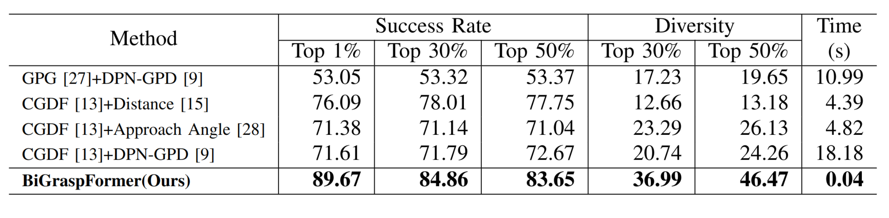
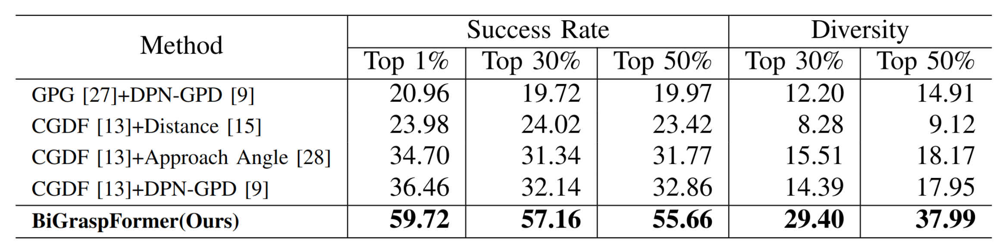
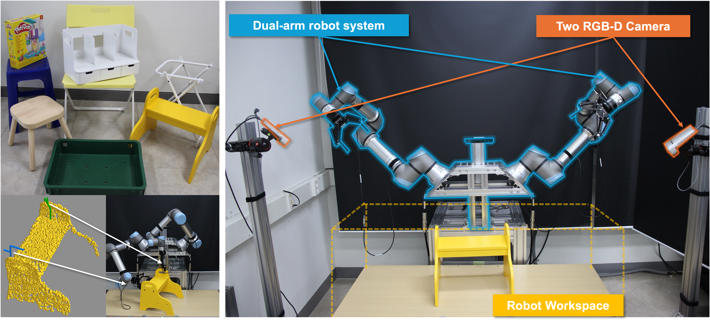

bluechair
Method Overview

Our goal is to predict bimanual grasps from an object point cloud. This task is challenging as it involves a 12-DoF action space, doubling the complexity of single-arm grasping. Each grasp needs to achieve force-closure stability while both arms coordinate to avoid collisions, maintain torque balance, and ensure overall stability. To tackle this challenge, we introduce the (SGB) grasp generation scheme, which decomposes the prediction of bimanual grasps into three structured stages. First, generate diverse single grasp candidates under basic stability constraints. Second, select feasible grasp pairs by discarding collisions and ensuring balanced force distribution. Finally, refine these pairs into stable bimanual grasps using learned features from both the object and single grasps. This formulation explicitly enforces both individual grasp quality and dual-arm coordination, decomposing the complex 12-DoF search space into a sequence of more tractable subproblems.
Simulation Benchmark
Simulation Environments

Success rate and diversity at top K% in easy simulation environments

Success rate and diversity at top K% in hard simulation environments

As demonstrated in the tables, our method achieves the state-of-the-art performance in both easy and hard simulation settings. Notably, it also features the fastest inference speed among all compared methods, while showing a more significant improvement in success rate in hard settings compared to easy settings.
Real Robot Experiments
Real Robot Setting

Dual-arm robotic system with two UR5e arms and two Azure Kinect RGB-D cameras, along with test objects and visualization of feasible bimanual grasps overlaid on object point clouds. Collision-free trajectory execution of selected grasp poses for grasping and lifting diverse objects including a stool, chair, and large box.
Real Evaluation
toybox
White Shelf
Yellow Stair
Wood Stool
White Frame
Green Bin
Yellow Chair
BibTeX
@article{kim2025bigraspformer,
title={BiGraspFormer: End-to-End Bimanual Grasp Transformer},
author={Kim, Kangmin and Back, Seunghyeok and Lee, Geonhyup and Lee, Sangbeom and Noh, Sangjun and Lee, Kyoobin},
journal={arXiv preprint arXiv:2509.19142},
year={2025}
}